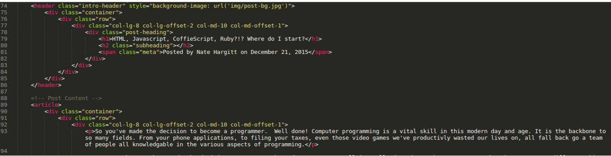
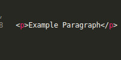
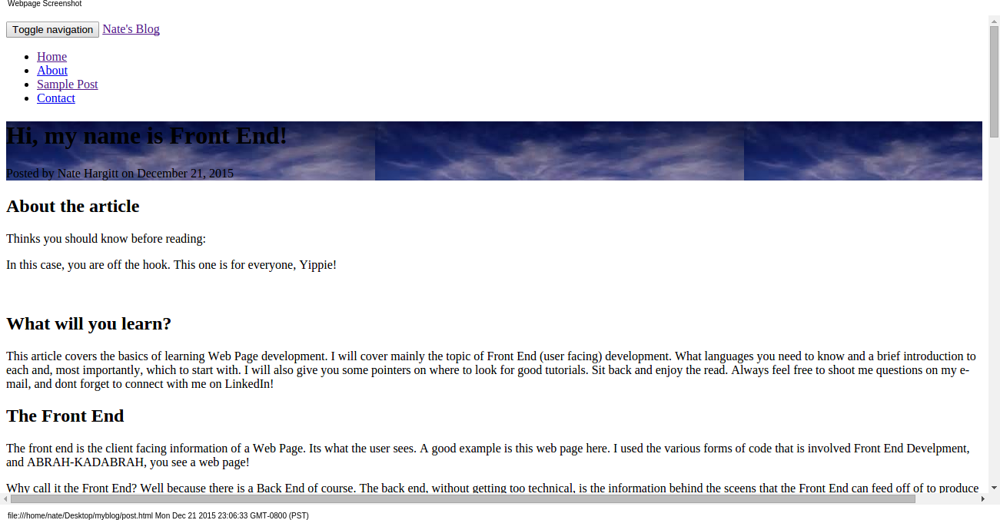
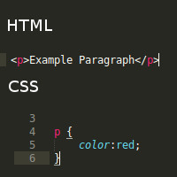
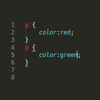
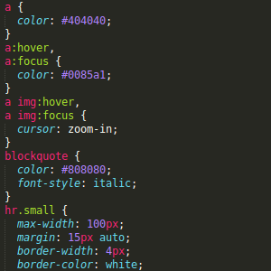
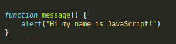

About the article
Things you should know before reading:
In this case, you are off the hook. This one is for everyone, Yippie!
What will you learn?
This article covers the basics of learning Web Page development. I will cover mainly the topic of Front End (user facing) development. What languages you need to know, a brief introduction to each and, most importantly, which to start with. I will also give you some pointers on where to look for good tutorials.
Sit back and enjoy the read. Always feel free to shoot me questions on my e-mail, and don't forget to connect with me on LinkedIn!
The Front End
The front end is the client facing information of a Web Page. Its what the user sees. A good example is this web page here. I used the various forms of code that is involved Front End Development, and ABRAH-KADABRAH, you see a web page!
Why call it the Front End? Well because there is a Back End of course. The back end, without getting too technical, is the information behind the scenes that the Front End can feed off of to produce information for the user. I say can because in smaller pages (like this blog) there really isn't a back end. However a site like Amazon is largely back end, as it responds to the user's input to gather information stored in the database and presents it to the user. Pretty cool eh. But this is a Front End Blog so I'm going focus on that for now.
With front end development there are really 3 main things you need to know how to do
First: How to structure a page
Second: How to style a page
Third: How to make dynamic (interact with the user)
Crack dem knuckles, we about to start the learning.
Managing Structure
Creating the structure of a page consists of taking the information of a page and marking it up so the browser knows how to render it to the user. This is where our first language comes in. Hyper Text Markup Language (HTML).
HTML is the language used to mark up your web page, thats literally it. You use "tags" and you tag information so that the web browser knows what to do with it when it shows up for the person viewing your page.
This is what the html looks like for this page:
Don't worry too much about understanding all this. The important thing to see is that all the text is surrounded by 〈tags〉 with pink colored text in them. These are tags, this tells the web browser to display the information contained in a specific way.
Lets take a closer look at how this works. If you wanted a web page to display "Example Paragraph". You would create the following HTML:
The result would be a page that says:
Example Paragraph
The letter "p" wrapped in angle brackets tells the browser to display a paragraph. This is called a tag. And as you see in the example above there are many tags around all paragraphs, sections, heading text, etc.
There is a lot to cover in regards to HTML and I'll get into this in another blog just for it (also the other subjects I cover below). The purpose of this is to tell you the very basic information.
Adding Some Style
Once your page is structured, its time to add some style to it. This is where Cascading Style Sheet (CSS).
CSS tells the browser what the HTML needs to look like. Without CSS this page would look like this:
Its not too bad, but defiantly doesn't create any emotional impact. So you use CSS to change the style of the HTML. So why is it called Cascading Style Sheet? Well the Style Sheet part is pretty obvious, you create a sheet and list out the styles with it, but the Cascading, whats that all about.
I'll get to that in a minute. The way that CSS is set up is that it selects the HTML tags (see above for a refresher), and does something to that tag. So for example if you want to change a paragraph's font color to red, you would use CSS to select the paragraph tag and turn it to red. Here is what that looks like:
Example Paragraph
Example Paragraph
And you see when you put the code it it changes the color of the paragraph.
So back the the Cascading part of Cascading Style Sheet, what this means basically is the Style Sheet Cascades. Information you put at the top can be over written towards the bottom. So if I were to change the CSS above to look like this:
The paragraph would look like this:
Example Paragraph
Some powerful stuff! Again, this is a brief introduction and I will reference Tutorials in the end, and will also be writing several blogs about the subject of CSS. To give you another look at CSS in action I'll throw in a picture of the CSS of this page, just for your enjoyment. Don't worry if it all looks like a foreign language, because well, it is!
Getting Interactive
Now to cover interactivity. A web page like this doesn't really need much interactivity, however if you want to make a sign in form, or create a game, or have icons jump out at you, you add some code telling the browser to do this.
Making a page interactive simply means making it respond to the user's activity. For a quick example scroll up on the page. You will see the Navigation bar appear. And when you scroll down again, it disappears. This is now a dynamic page. It interacts with you the user.
There are many ways to make a page interactive. Some ways are can even be done through HTML and CSS. But the main way this is done these days is through JavaScript, or JavaScript libraries.
Without getting too technical, JavaScript is a language that is designed to manipulate the page, or information. Unlike CSS and HTML, it has Functions. It does stuff.
Javscript can get very technical when trying to do complicated things, so very skilled coders develop JavaScript libraries, and frameworks. These are all based on JavaScript and use JavaScript at their core to do what they do, it just short cuts it and makes it easier to do. To name a few there is:
jQuery
AngularJS
EmberJS
And many more
Each Library or Framework has various purposes, and takes a part of JavaScript and makes it a lot easier. But in order to really use them and understand them, you should defiantly get a good understanding of JavaScript.
Quickly I'll show you a bit of JavaScript behind the scenes.
Below you see a button. When you click on the button it will pop up a message on your screen.
Thats JavaScript, and this is what the JavaScript Code looks like
Again, a lot to cover, this is just the basics. I'll get more into JavaScript, and its libraries at a later time.
Where do you start?
Well thats the basic ingredients to a web page front end. So now what do you do? Well in order to program web pages you are going to have to learn these languages. So where do you start?
Start with HTML. HTML's basic concepts are the easiest to learn, and with out at least a basic understanding of HTML, CSS and JavaScript will be very hard to learn indeed.
That being said, it also depends on what you want to do. If you are interested in making on line games, you are probably not going to want to spend a whole lot of time on HTML, or CSS. A mastery of these will make your games look a lot better, but you are really going to want to get JavaScript down cold to make these games do something.
But truth be told, each of these languages are so connected that, while learning JavaScript you will undoubtedly learn more about HTML. Same goes for CSS.
The best way to learn any of these languages is to USE THEM. You can read and read and read, but the information isn't necessarily going to click until you DO IT. I cant really stress that enough. Learn a bit of info, use it a hundred different ways, then learn some more.
I'll go into some tips on learning this stuff quicker in my next blog.
Where to learn
To get the best and most stream-lined learning experience, I would say find a school. In San Francisco, where I live, there are several "bootcamps" that teach coding in about 4 months. The one I did, that was super awesome, is called Codify Academy. Click the name and it will take you to their site. I highly recommend learning with them or a similar "Bootcamp".
There are many benefits to working with a School, or Bootcamp. First they have already found the best tutorails and information, and they lay out a path for you to follow. Also there is always someone to ask questions to. When I was trying to learn this on my own, it took me days to figure out something, but after I got involved with the bootcamp, I'd shoot my mentor an email, and minutes later my troubles were gone.
Short of that you can always find a mentor. Craigslist, or LinkedIn, they have people that teach lessons. Shoot feel free to ask me to mentor you!
However with or with out a mentor, you are going to be doing a lot of this study on your own. So below I'm going to list a bunch useful places to go to for each language.
HTML
Head First HTML and CSS
This book is great, highly recommend it. It takes you from 0 to hero for HTML and CSS.
W3schools.com
This is the best tutorial site for HTML and CSS
Codeacademy.com
This is heavily based on learning by doing.
Head First HTML5 Programming
I wouldn't recommend this as your first book, but it is very good once you've gotten a good understanding of HTML and CSS. It also teachings you some of the Basics of JavaScript
CSS
Head First HTML and CSS
This book is great, highly recommend it. It takes you from 0 to hero for HTML and CSS.
W3schools.com
This is the best tutorial site for HTML and CSS
Codeacademy.com
This is heavily based on learning by doing.
JavaScript
Codeacademy.com
This is probably the best place to start learning Javascript. It takes you through teaches you the basics and teaches you how to use those basics. However, it doesn't teach you much about using JavaScript to manipulate the Web Page itself.
Thegymnasium.com
I would recommend doing this either after you've completed some of the CodeAcademy courses, or you can start with this. This is the Best short tutorial on using JavaScript to manipulate a Web Page.
Head First JavaScript Programming
A full guide to JavaScript. Its a great book, and they make it a lot easier than most books out there.
Head First HTML5 Programming
This book is good again after you have gotten an understanding of HTML and CSS. It teaches you how to make Web Applications, and goes very deep into Javascript.
Thanks for reading!
Thanks for taking the time to check out this post. I hope it was helpful. Keep checking back because I'll be posting more and more as time goes on.
Feel free to connect with me on Social Media, or shoot me an email!
NEVER STOP CODING